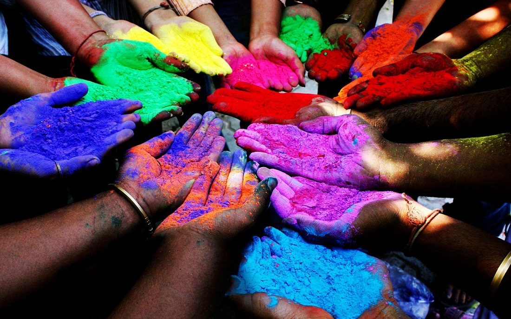

HOLI
Do you know what is holi in India? The Holi Festival of Colors in India is a celebration of the victory of good over evil, the destruction of the demoness Holika.
It is celebrated every year on the day after the full moon in the Hindu month of Phalguna which is early March.
People celebrate the start of spring and other events in the Hindu religion; they march the streets and spray people with colored powders while dancing and singing.
Celebrate the Holi India Colors festival with our very own Trips To India!
The Original Story behind the Holi of Colors
The festival of Colors is celebrated all over India since ancient times.
Originally, the festival was an agricultural festival, celebrating the arrival of spring.
It represents throwing off the gloom of winter and enjoying the liveliness of spring. The legend associated with the festival involves an evil king called Hiranyakashipu.
He forbade his son from worshipping Vishnu. However, Radhu proceeded offering prayers to the gods.
Hiranyakashipu challenged Prahlad to sit on a pyre with his aunt Holika who was to be immune to fire. When the fire started, Holika was burnt to death whereas Prahlad survived without a scar.
Burning Holika is celebrated as Holi.
The morning after also known as Rangwali Holi is where people smear each other with colors and enjoy delicious gujiyas together, sharing the love.
Water guns and water-filled balloons are also a part of the celebrations, making every moment of the event memorable.
3 Steps for Holi Festival Celebration
- Preparation
- Lighting the Bonfire
- Colors
Colours of Holi
In Mauritius, Holi is celebrated by nearly everyone, regardless of religion. Anyone out in an open area is fair game,
but only dry colours are used inside buildings or in doorways.
Traditionally, slightly more muted colours derived from plants were used but the vibrant pinks and neon yellows we’re used to seeing today are water-based commercial pigments.
Markets and shops are painted in every color of the rainbow in the week leading up to the festival, setting the tone for the exuberance to come.
People throw handfuls of gulal (brightly colored powders) and soak each other with water jets known as pichkaris, made of local Mauritian bamboo stalks, on Holi morning.
